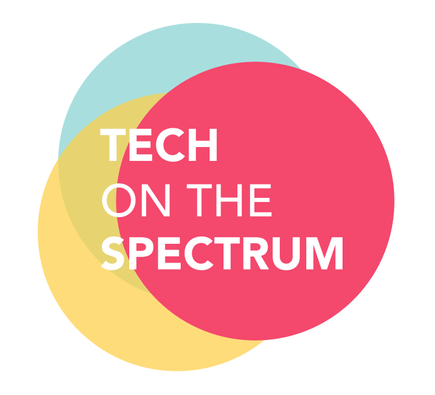
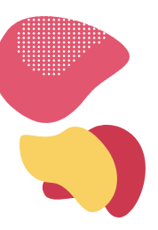

2019 |
 |
Support the Success of People with Special Talent
|  RSVP Googlers / RSVP External |
Date: 10/17/2019
Time: 1:00 PM - 3:30 PM
Location: Comic-Con Teck Talk, US-SVL-TC6
Address: TC6, 11th Avenue, Sunnyvale, CA
Description
1 in 59 children in the US have Autism. Despite the negative impact Autism can have on the ability to communicate, there are lots of successful adults with autism in tech companies who have great careers. Join us in our speaker series and panel discussion to learn more about Autism and what you can do to help people on the spectrum to achieve greater success.
RSVP (Googlers) : http://go/2019-autism-summit
RSVP (External): https://cutt.ly/2019autismsummit
Contact us: tech-on-the-spectrum@googlegroups.com
Ask Your Questions Here : 2019 Tots Summit Questions
Remote Options for Googlers -
Live stream : 2019 Tots Summit Live
GVC Hangout ID: xmt-wesb-mje
Agenda
| Time | Activity | Comments |
|---|---|---|
| 12:30 - 1:00 PM | Check - in | Boba Drinks for the first 100! |
| 1:00 - 1:30 PM | The Strengths-Based Model of Neurodiversity and the Stanford Neurodiversity Project | by Lawrence Fung MD, PhD, Director of the Stanford Neurodiversity Project |
| 1:30 - 2:00 PM | My Path to Google | by Benjamin Donnelly Security Engineer, Google Cloud |
| 2:00 - 2:30 PM | Seeking All Kinds of Talent for Google | by Lorne Needle Global Lead for PWD Initiatives, Staffing |
| 2:30 - 3:15 PM | Panel Discussion | |
| 3:15 - 3:30 PM | Q&A | |
| 3:30 - 4:00 PM | Social and Mingle |
| RSVP Googlers / RSVP External |
Organizer
Autism in High Tech - Tech on the Spectrum is a 501(c)(3) non-profit organization registered in the U.S. California EIN 83-2360946,
started from a Google Serve volunteer project. Our mission is to raise awareness of Autism and raise self-esteem of people with Autism
- people on the spectrum.
Note - There will be photography and video filming during the summit for autistic awareness education, promotion and knowledge sharing purpose and no personal or private information will be used for other than that purpose.